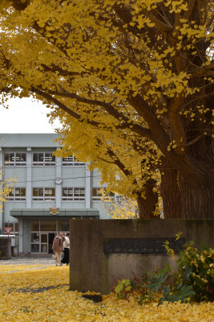
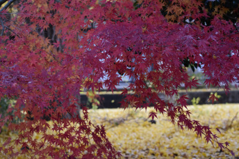
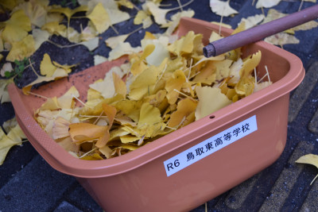
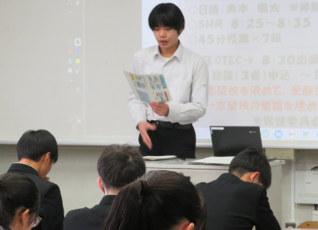
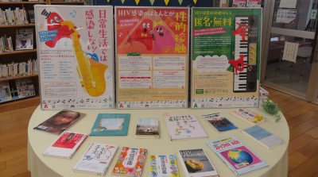
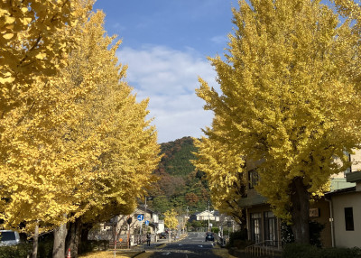
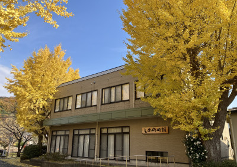

地域課題について解決方法を考える ～第1学年「鳥取学」校外学習について～
2024年12月13日 11時35分本校では、探究的な学習の時間に様々な探究活動を行っています。中でも「鳥取学」は１，２年生で行うもので、学校としてとても大切にしている活動です。
ここでは今年度の１年生の取り組みを紹介します。

本校では、探究的な学習の時間に様々な探究活動を行っています。中でも「鳥取学」は１，２年生で行うもので、学校としてとても大切にしている活動です。
ここでは今年度の１年生の取り組みを紹介します。
全国的にインフルエンザ等の感染症が流行する季節となり、本校でも手洗い、換気を励行しています。
その換気について画期的アイテムを作成しましたので、生徒保健委員会の活動と合わせてご紹介したいと思います。
晩秋を迎えた鳥取東高校。色鮮やかなイチョウの彩りに出迎えられ，一面黄に染まった歩道に季節の移ろいを感じながら，生徒は今日も東高生活に没頭しています。
まるでじゅうたんのような柔らかさと温もりを覚える歩道。ふと目を横にやれば，見事なまでに紅葉したモミジが…。そのコントラストの美しさには感動させられます。
大学受験を控えた３年生。顔つきもたたずまいも，だいぶ受験生らしくなってきました。そんな彼ら彼女らにとって，昼休憩のひと時は，緊張感を和らげ，午後の授業への英気を養う安息の時間。「わぁ，きれい…」窓越しにのぞく晩秋の景色に，多くの生徒が癒されているようでした。
ただ…雨に濡れたイチョウの葉は滑りやすいんですよね。歩行だけでなく自転車や自動車での通行に支障をきたすことがあります。自然の営みに心の安らぎを与えてもらったお礼に，そして私達にできる（すべき）地域貢献として，放課後，生徒会執行部や環境委員を中心に落ち葉拾いを継続しています。
  
毎年12月１日は「世界エイズデー」。本校ではこのタイミングをとらえ，誤解や偏見のない適切な理解を促すとともに，自分そして大切な人の保健衛生について自分事として考えることを目的に，啓発物の配布も含めたのキャンペーンを行っています。
今年は，朝のホームルームの時間を利用して，各クラス保健委員が啓発物を配布し，エイズをはじめとする性感染症について説明し，ともに考える学習会を持ちました。これに並行して学校図書館でも関連書籍を紹介し，エイズについての生徒の適切な理解を促すよう工夫しています。
 
12月６日（金）2限、1年3，6組の美術の授業にお邪魔しました。
12月５日（木）５限、3年7組で行われた化学の授業にお邪魔しました。
１２月４日（水）８限、「志望理由書を書こう！～大切なのは好奇心と行動力～」をテーマにした小論文講演会を実施しました。
「志望理由書」というと、大学受験の時、特に推薦入試や総合型入試を受験する際に提出するもの、というイメージがあると思います。そのようなものを2年生のこの時期にどうして書くのか、疑問に思った人も少なくないでしょう。
本校第２体育館を利用して、修立地区の避難訓練が行われました。
学校では、昨日から２学期期末考査が始まりました。どの学年生徒にとっても大切な考査。真剣に取り組む生徒の気迫と緊張感も相まって、校内は一日静まり返っています。
そんな中、学校正門前のイチョウ並木が見頃を迎えています。
 
１１月２６日（火）４限目、２年２組の数学Ⅱの授業を紹介します。